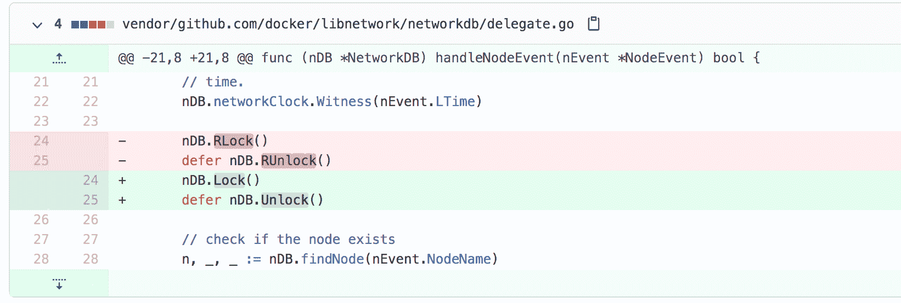
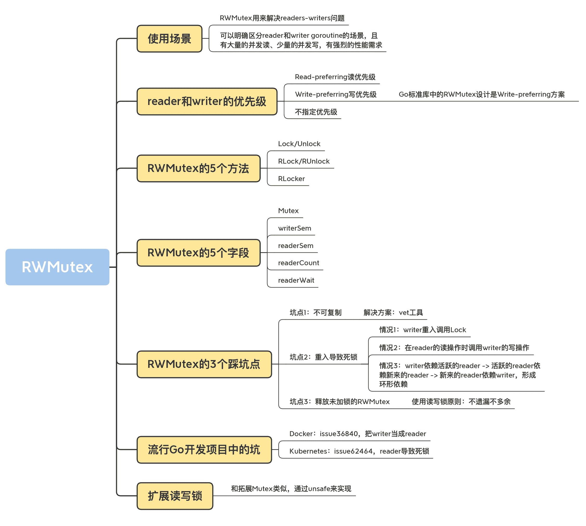

05｜ RWMutex：讀寫鎖的實現原理及避坑指南
你好，我是鳥窩。
在前面的四節課中，我們學習了第一個同步原語，即 Mutex，我們使用它來保證讀寫共享資源的安全性。不管是讀還是寫，我們都通過 Mutex 來保證只有一個 goroutine 訪問共享資源，這在某些情況下有點“浪費”。比如說，在寫少讀多的情況下，即使一段時間內沒有寫操作，大量併發的讀訪問也不得不在 Mutex 的保護下變成了串行訪問，這個時候，使用 Mutex，對性能的影響就比較大。
怎麼辦呢？你是不是已經有思路了，對，就是區分讀寫操作。
我來具體解釋一下。如果某個讀操作的 goroutine 持有了鎖，在這種情況下，其它讀操作的 goroutine 就不必一直傻傻地等待了，而是可以併發地訪問共享變量，這樣我們就可以將串行的讀變成並行讀，提高讀操作的性能。當寫操作的 goroutine 持有鎖的時候，它就是一個排外鎖，其它的寫操作和讀操作的 goroutine，需要阻塞等待持有這個鎖的 goroutine 釋放鎖。
這一類併發讀寫問題叫作readers-writers 問題，意思就是，同時可能有多個讀或者多個寫，但是隻要有一個線程在執行寫操作，其它的線程都不能執行讀寫操作。
Go 標準庫中的 RWMutex（讀寫鎖）就是用來解決這類 readers-writers 問題的。所以，這節課，我們就一起來學習 RWMutex。我會給你介紹讀寫鎖的使用場景、實現原理以及容易掉入的坑，你一定要記住這些陷阱，避免在實際的開發中犯相同的錯誤。
什麼是 RWMutex？
我先簡單解釋一下讀寫鎖 RWMutex。標準庫中的 RWMutex 是一個 reader/writer 互斥鎖。RWMutex 在某一時刻只能由任意數量的 reader 持有，或者是隻被單個的 writer 持有。
RWMutex 的方法也很少，總共有 5 個。
- Lock/Unlock：寫操作時調用的方法。如果鎖已經被 reader 或者 writer 持有，那麼，Lock 方法會一直阻塞，直到能獲取到鎖；Unlock 則是配對的釋放鎖的方法。
- RLock/RUnlock：讀操作時調用的方法。如果鎖已經被 writer 持有的話，RLock 方法會一直阻塞，直到能獲取到鎖，否則就直接返回；而 RUnlock 是 reader 釋放鎖的方法。
- RLocker：這個方法的作用是為讀操作返回一個 Locker 接口的對象。它的 Lock 方法會調用 RWMutex 的 RLock 方法，它的 Unlock 方法會調用 RWMutex 的 RUnlock 方法。
RWMutex 的零值是未加鎖的狀態，所以，當你使用 RWMutex 的時候，無論是聲明變量，還是嵌入到其它 struct 中，都不必顯式地初始化。
我以計數器為例，來說明一下，如何使用 RWMutex 保護共享資源。計數器的 count++操作是寫操作，而獲取 count 的值是讀操作，這個場景非常適合讀寫鎖，因為讀操作可以並行執行，寫操作時只允許一個線程執行，這正是 readers-writers 問題。
在這個例子中，使用 10 個 goroutine 進行讀操作，每讀取一次，sleep 1 毫秒，同時，還有一個 gorotine 進行寫操作，每一秒寫一次，這是一個 1 writer-n reader 的讀寫場景，而且寫操作還不是很頻繁（一秒一次）：
func main() {
var counter Counter
for i := 0; i < 10; i++ { // 10個reader
go func() {
for {
counter.Count() // 計數器讀操作
time.Sleep(time.Millisecond)
}
}()
}
for { // 一個writer
counter.Incr() // 計數器寫操作
time.Sleep(time.Second)
}
}
// 一個線程安全的計數器
type Counter struct {
mu sync.RWMutex
count uint64
}
// 使用寫鎖保護
func (c *Counter) Incr() {
c.mu.Lock()
c.count++
c.mu.Unlock()
}
// 使用讀鎖保護
func (c *Counter) Count() uint64 {
c.mu.RLock()
defer c.mu.RUnlock()
return c.count
}
可以看到，Incr 方法會修改計數器的值，是一個寫操作，我們使用 Lock/Unlock 進行保護。Count 方法會讀取當前計數器的值，是一個讀操作，我們使用 RLock/RUnlock 方法進行保護。
Incr 方法每秒才調用一次，所以，writer 競爭鎖的頻次是比較低的，而 10 個 goroutine 每毫秒都要執行一次查詢，通過讀寫鎖，可以極大提升計數器的性能，因為在讀取的時候，可以併發進行。如果使用 Mutex，性能就不會像讀寫鎖這麼好。因為多個 reader 併發讀的時候，使用互斥鎖導致了 reader 要排隊讀的情況，沒有 RWMutex 併發讀的性能好。
如果你遇到可以明確區分 reader 和 writer goroutine 的場景，且有大量的併發讀、少量的併發寫，並且有強烈的性能需求，你就可以考慮使用讀寫鎖 RWMutex 替換 Mutex。
在實際使用 RWMutex 的時候，如果我們在 struct 中使用 RWMutex 保護某個字段，一般會把它和這個字段放在一起，用來指示兩個字段是一組字段。除此之外，我們還可以採用匿名字段的方式嵌入 struct，這樣，在使用這個 struct 時，我們就可以直接調用 Lock/Unlock、RLock/RUnlock 方法了，這和我們前面在01 講中介紹 Mutex 的使用方法很類似，你可以回去複習一下。
RWMutex 的實現原理
RWMutex 是很常見的併發原語，很多編程語言的庫都提供了類似的併發類型。RWMutex 一般都是基於互斥鎖、條件變量（condition variables）或者信號量（semaphores）等併發原語來實現。Go 標準庫中的 RWMutex 是基於 Mutex 實現的。
readers-writers 問題一般有三類，基於對讀和寫操作的優先級，讀寫鎖的設計和實現也分成三類。
- Read-preferring：讀優先的設計可以提供很高的併發性，但是，在競爭激烈的情況下可能會導致寫飢餓。這是因為，如果有大量的讀，這種設計會導致只有所有的讀都釋放了鎖之後，寫才可能獲取到鎖。
- Write-preferring：寫優先的設計意味著，如果已經有一個 writer 在等待請求鎖的話，它會阻止新來的請求鎖的 reader 獲取到鎖，所以優先保障 writer。當然，如果有一些 reader 已經請求了鎖的話，新請求的 writer 也會等待已經存在的 reader 都釋放鎖之後才能獲取。所以，寫優先級設計中的優先權是針對新來的請求而言的。這種設計主要避免了 writer 的飢餓問題。
- 不指定優先級：這種設計比較簡單，不區分 reader 和 writer 優先級，某些場景下這種不指定優先級的設計反而更有效，因為第一類優先級會導致寫飢餓，第二類優先級可能會導致讀飢餓，這種不指定優先級的訪問不再區分讀寫，大家都是同一個優先級，解決了飢餓的問題。
Go 標準庫中的 RWMutex 設計是 Write-preferring 方案。一個正在阻塞的 Lock 調用會排除新的 reader 請求到鎖。
RWMutex 包含一個 Mutex，以及四個輔助字段 writerSem、readerSem、readerCount 和 readerWait：
type RWMutex struct {
w Mutex // 互斥鎖解決多個writer的競爭
writerSem uint32 // writer信號量
readerSem uint32 // reader信號量
readerCount int32 // reader的數量
readerWait int32 // writer等待完成的reader的數量
}
const rwmutexMaxReaders = 1 << 30
我來簡單解釋一下這幾個字段。
- 字段 w：為 writer 的競爭鎖而設計；
- 字段 readerCount：記錄當前 reader 的數量（以及是否有 writer 競爭鎖）；
- readerWait：記錄 writer 請求鎖時需要等待 read 完成的 reader 的數量；
- writerSem 和 readerSem：都是為了阻塞設計的信號量。
這裡的常量 rwmutexMaxReaders，定義了最大的 reader 數量。
好了，知道了 RWMutex 的設計方案和具體字段，下面我來解釋一下具體的方法實現。
RLock/RUnlock 的實現
首先，我們看一下移除了 race 等無關緊要的代碼後的 RLock 和 RUnlock 方法：
func (rw *RWMutex) RLock() {
if atomic.AddInt32(&rw.readerCount, 1) < 0 {
// rw.readerCount是負值的時候，意味著此時有writer等待請求鎖，因為writer優先級高，所以把後來的reader阻塞休眠
runtime_SemacquireMutex(&rw.readerSem, false, 0)
}
}
func (rw *RWMutex) RUnlock() {
if r := atomic.AddInt32(&rw.readerCount, -1); r < 0 {
rw.rUnlockSlow(r) // 有等待的writer
}
}
func (rw *RWMutex) rUnlockSlow(r int32) {
if atomic.AddInt32(&rw.readerWait, -1) == 0 {
// 最後一個reader了，writer終於有機會獲得鎖了
runtime_Semrelease(&rw.writerSem, false, 1)
}
}
第 2 行是對 reader 計數加 1。你可能比較困惑的是，readerCount 怎麼還可能為負數呢？其實，這是因為，readerCount 這個字段有雙重含義：
- 沒有 writer 競爭或持有鎖時，readerCount 和我們正常理解的 reader 的計數是一樣的；
- 但是，如果有 writer 競爭鎖或者持有鎖時，那麼，readerCount 不僅僅承擔著 reader 的計數功能，還能夠標識當前是否有 writer 競爭或持有鎖，在這種情況下，請求鎖的 reader 的處理進入第 4 行，阻塞等待鎖的釋放。
調用 RUnlock 的時候，我們需要將 Reader 的計數減去 1（第 8 行），因為 reader 的數量減少了一個。但是，第 8 行的 AddInt32 的返回值還有另外一個含義。如果它是負值，就表示當前有 writer 競爭鎖，在這種情況下，還會調用 rUnlockSlow 方法，檢查是不是 reader 都釋放讀鎖了，如果讀鎖都釋放了，那麼可以喚醒請求寫鎖的 writer 了。
當一個或者多個 reader 持有鎖的時候，競爭鎖的 writer 會等待這些 reader 釋放完，才可能持有這把鎖。打個比方，在房地產行業中有條規矩叫做“買賣不破租賃”，意思是說，就算房東把房子賣了，新業主也不能把當前的租戶趕走，而是要等到租約結束後，才能接管房子。這和 RWMutex 的設計是一樣的。當 writer 請求鎖的時候，是無法改變既有的 reader 持有鎖的現實的，也不會強制這些 reader 釋放鎖，它的優先權只是限定後來的 reader 不要和它搶。
所以，rUnlockSlow 將持有鎖的 reader 計數減少 1 的時候，會檢查既有的 reader 是不是都已經釋放了鎖，如果都釋放了鎖，就會喚醒 writer，讓 writer 持有鎖。
Lock
RWMutex 是一個多 writer 多 reader 的讀寫鎖，所以同時可能有多個 writer 和 reader。那麼，為了避免 writer 之間的競爭，RWMutex 就會使用一個 Mutex 來保證 writer 的互斥。
一旦一個 writer 獲得了內部的互斥鎖，就會反轉 readerCount 字段，把它從原來的正整數 readerCount(>=0) 修改為負數（readerCount-rwmutexMaxReaders），讓這個字段保持兩個含義（既保存了 reader 的數量，又表示當前有 writer）。
我們來看下下面的代碼。第 5 行，還會記錄當前活躍的 reader 數量，所謂活躍的 reader，就是指持有讀鎖還沒有釋放的那些 reader。
func (rw *RWMutex) Lock() {
// 首先解決其他writer競爭問題
rw.w.Lock()
// 反轉readerCount，告訴reader有writer競爭鎖
r := atomic.AddInt32(&rw.readerCount, -rwmutexMaxReaders) + rwmutexMaxReaders
// 如果當前有reader持有鎖，那麼需要等待
if r != 0 && atomic.AddInt32(&rw.readerWait, r) != 0 {
runtime_SemacquireMutex(&rw.writerSem, false, 0)
}
}
如果 readerCount 不是 0，就說明當前有持有讀鎖的 reader，RWMutex 需要把這個當前 readerCount 賦值給 readerWait 字段保存下來（第 7 行）， 同時，這個 writer 進入阻塞等待狀態（第 8 行）。
每當一個 reader 釋放讀鎖的時候（調用 RUnlock 方法時），readerWait 字段就減 1，直到所有的活躍的 reader 都釋放了讀鎖，才會喚醒這個 writer。
Unlock
當一個 writer 釋放鎖的時候，它會再次反轉 readerCount 字段。可以肯定的是，因為當前鎖由 writer 持有，所以，readerCount 字段是反轉過的，並且減去了 rwmutexMaxReaders 這個常數，變成了負數。所以，這裡的反轉方法就是給它增加 rwmutexMaxReaders 這個常數值。
既然 writer 要釋放鎖了，那麼就需要喚醒之後新來的 reader，不必再阻塞它們了，讓它們開開心心地繼續執行就好了。
在 RWMutex 的 Unlock 返回之前，需要把內部的互斥鎖釋放。釋放完畢後，其他的 writer 才可以繼續競爭這把鎖。
func (rw *RWMutex) Unlock() {
// 告訴reader沒有活躍的writer了
r := atomic.AddInt32(&rw.readerCount, rwmutexMaxReaders)
// 喚醒阻塞的reader們
for i := 0; i < int(r); i++ {
runtime_Semrelease(&rw.readerSem, false, 0)
}
// 釋放內部的互斥鎖
rw.w.Unlock()
}
在這段代碼中，我刪除了 race 的處理和異常情況的檢查，總體看來還是比較簡單的。這裡有幾個重點，我要再提醒你一下。首先，你要理解 readerCount 這個字段的含義以及反轉方式。其次，你還要注意字段的更改和內部互斥鎖的順序關係。在 Lock 方法中，是先獲取內部互斥鎖，才會修改的其他字段；而在 Unlock 方法中，是先修改的其他字段，才會釋放內部互斥鎖，這樣才能保證字段的修改也受到互斥鎖的保護。
好了，到這裡我們就完整學習了 RWMutex 的概念和實現原理。RWMutex 的應用場景非常明確，就是解決 readers-writers 問題。學完了今天的內容，之後當你遇到這類問題時，要優先想到 RWMutex。另外，Go 併發原語代碼實現的質量都很高，非常精煉和高效，所以，你可以通過看它們的實現原理，學習一些編程的技巧。當然，還有非常重要的一點就是要知道 reader 或者 writer 請求鎖的時候，既有的 reader/writer 和後續請求鎖的 reader/writer 之間的（釋放鎖 / 請求鎖）順序關係。
有個很有意思的事兒，就是官方的文檔對 RWMutex 介紹是錯誤的，或者說是不明確的，在下一個版本（Go 1.16）中，官方會更改對 RWMutex 的介紹，具體是這樣的：
A RWMutex is a reader/writer mutual exclusion lock.
The lock can be held by any number of readers or a single writer, and
a blocked writer also blocks new readers from acquiring the lock.
這個描述是相當精確的，它指出了 RWMutex 可以被誰持有，以及 writer 比後續的 reader 有獲取鎖的優先級。
雖然 RWMutex 暴露的 API 也很簡單，使用起來也沒有複雜的邏輯，但是和 Mutex 一樣，在實際使用的時候，也會很容易踩到一些坑。接下來，我給你重點介紹 3 個常見的踩坑點。
RWMutex 的 3 個踩坑點
坑點 1：不可複製
前面剛剛說過，RWMutex 是由一個互斥鎖和四個輔助字段組成的。我們很容易想到，互斥鎖是不可複製的，再加上四個有狀態的字段，RWMutex 就更加不能複製使用了。
不能複製的原因和互斥鎖一樣。一旦讀寫鎖被使用，它的字段就會記錄它當前的一些狀態。這個時候你去複製這把鎖，就會把它的狀態也給複製過來。但是，原來的鎖在釋放的時候，並不會修改你複製出來的這個讀寫鎖，這就會導致複製出來的讀寫鎖的狀態不對，可能永遠無法釋放鎖。
那該怎麼辦呢？其實，解決方案也和互斥鎖一樣。你可以藉助 vet 工具，在變量賦值、函數傳參、函數返回值、遍歷數據、struct 初始化等時，檢查是否有讀寫鎖隱式複製的情景。
坑點 2：重入導致死鎖
讀寫鎖因為重入（或遞歸調用）導致死鎖的情況更多。
我先介紹第一種情況。因為讀寫鎖內部基於互斥鎖實現對 writer 的併發訪問，而互斥鎖本身是有重入問題的，所以，writer 重入調用 Lock 的時候，就會出現死鎖的現象，這個問題，我們在學習互斥鎖的時候已經瞭解過了。
func foo(l *sync.RWMutex) {
fmt.Println("in foo")
l.Lock()
bar(l)
l.Unlock()
}
func bar(l *sync.RWMutex) {
l.Lock()
fmt.Println("in bar")
l.Unlock()
}
func main() {
l := &sync.RWMutex{}
foo(l)
}
運行這個程序，你就會得到死鎖的錯誤輸出，在 Go 運行的時候，很容易就能檢測出來。
第二種死鎖的場景有點隱蔽。我們知道，有活躍 reader 的時候，writer 會等待，如果我們在 reader 的讀操作時調用 writer 的寫操作（它會調用 Lock 方法），那麼，這個 reader 和 writer 就會形成互相依賴的死鎖狀態。Reader 想等待 writer 完成後再釋放鎖，而 writer 需要這個 reader 釋放鎖之後，才能不阻塞地繼續執行。這是一個讀寫鎖常見的死鎖場景。
第三種死鎖的場景更加隱蔽。
當一個 writer 請求鎖的時候，如果已經有一些活躍的 reader，它會等待這些活躍的 reader 完成，才有可能獲取到鎖，但是，如果之後活躍的 reader 再依賴新的 reader 的話，這些新的 reader 就會等待 writer 釋放鎖之後才能繼續執行，這就形成了一個環形依賴： writer 依賴活躍的 reader -> 活躍的 reader 依賴新來的 reader -> 新來的 reader 依賴 writer。

這個死鎖相當隱蔽，原因在於它和 RWMutex 的設計和實現有關。啥意思呢？我們來看一個計算階乘 (n!) 的例子：
func main() {
var mu sync.RWMutex
// writer,稍微等待，然後製造一個調用Lock的場景
go func() {
time.Sleep(200 * time.Millisecond)
mu.Lock()
fmt.Println("Lock")
time.Sleep(100 * time.Millisecond)
mu.Unlock()
fmt.Println("Unlock")
}()
go func() {
factorial(&mu, 10) // 計算10的階乘, 10!
}()
select {}
}
// 遞歸調用計算階乘
func factorial(m *sync.RWMutex, n int) int {
if n < 1 { // 階乘退出條件
return 0
}
fmt.Println("RLock")
m.RLock()
defer func() {
fmt.Println("RUnlock")
m.RUnlock()
}()
time.Sleep(100 * time.Millisecond)
return factorial(m, n-1) * n // 遞歸調用
}
factoria 方法是一個遞歸計算階乘的方法，我們用它來模擬 reader。為了更容易地製造出死鎖場景，我在這裡加上了 sleep 的調用，延緩邏輯的執行。這個方法會調用讀鎖（第 27 行），在第 33 行遞歸地調用此方法，每次調用都會產生一次讀鎖的調用，所以可以不斷地產生讀鎖的調用，而且必須等到新請求的讀鎖釋放，這個讀鎖才能釋放。
同時，我們使用另一個 goroutine 去調用 Lock 方法，來實現 writer，這個 writer 會等待 200 毫秒後才會調用 Lock，這樣在調用 Lock 的時候，factoria 方法還在執行中不斷調用 RLock。
這兩個 goroutine 互相持有鎖並等待，誰也不會退讓一步，滿足了“writer 依賴活躍的 reader -> 活躍的 reader 依賴新來的 reader -> 新來的 reader 依賴 writer”的死鎖條件，所以就導致了死鎖的產生。
所以，使用讀寫鎖最需要注意的一點就是儘量避免重入，重入帶來的死鎖非常隱蔽，而且難以診斷。
坑點 3：釋放未加鎖的 RWMutex
和互斥鎖一樣，Lock 和 Unlock 的調用總是成對出現的，RLock 和 RUnlock 的調用也必須成對出現。Lock 和 RLock 多餘的調用會導致鎖沒有被釋放，可能會出現死鎖，而 Unlock 和 RUnlock 多餘的調用會導致 panic。在生產環境中出現 panic 是大忌，你總不希望半夜爬起來處理生產環境程序崩潰的問題吧？所以，在使用讀寫鎖的時候，一定要注意，不遺漏不多餘。
流行的 Go 開發項目中的坑
好了，又到了泡一杯寧夏枸杞加新疆大灘棗的養生茶，靜靜地欣賞知名項目出現 Bug 的時候了，這次被拉出來的是 RWMutex 的 Bug。
Docker
issue 36840
issue 36840修復的是錯誤地把 writer 當成 reader 的 Bug。 這個地方本來需要修改數據，需要調用的是寫鎖，結果用的卻是讀鎖。或許是被它緊挨著的 findNode 方法調用迷惑了，認為這只是一個讀操作。可實際上，代碼後面還會有 changeNodeState 方法的調用，這是一個寫操作。修復辦法也很簡單，只需要改成 Lock/Unlock 即可。

Kubernetes
issue 62464
issue 62464就是讀寫鎖第二種死鎖的場景，這是一個典型的 reader 導致的死鎖的例子。知道墨菲定律吧？“凡是可能出錯的事，必定會出錯”。你可能覺得我前面講的 RWMutex 的坑絕對不會被人踩的，因為道理大家都懂，但是你看，Kubernetes 就踩了這個重入的坑。
這個 issue 在移除 pod 的時候可能會發生，原因就在於，GetCPUSetOrDefault 方法會請求讀鎖，同時，它還會調用 GetCPUSet 或 GetDefaultCPUSet 方法。當這兩個方法都請求寫鎖時，是獲取不到的，因為 GetCPUSetOrDefault 方法還沒有執行完，不會釋放讀鎖，這就形成了死鎖。

總結
在開發過程中，一開始考慮共享資源併發訪問問題的時候，我們就會想到互斥鎖 Mutex。因為剛開始的時候，我們還並不太瞭解併發的情況，所以，就會使用最簡單的同步原語來解決問題。等到系統成熟，真正到了需要性能優化的時候，我們就能靜下心來分析併發場景的可能性，這個時候，我們就要考慮將 Mutex 修改為 RWMutex，來壓榨系統的性能。
當然，如果一開始你的場景就非常明確了，比如我就要實現一個線程安全的 map，那麼，一開始你就可以考慮使用讀寫鎖。
正如我在前面提到的，如果你能意識到你要解決的問題是一個 readers-writers 問題，那麼你就可以毫不猶豫地選擇 RWMutex，不用考慮其它選擇。那在使用 RWMutex 時，最需要注意的一點就是儘量避免重入，重入帶來的死鎖非常隱蔽，而且難以診斷。
另外我們也可以擴展 RWMutex，不過實現方法和互斥鎖 Mutex 差不多，在技術上是一樣的，都是通過 unsafe 來實現，我就不再具體講了。課下你可以參照我們上節課學習的方法，實現一個擴展的 RWMutex。
這一講我們系統學習了讀寫鎖的相關知識，這裡提供給你一個知識地圖，幫助你複習本節課的知識。

思考題
請你寫一個擴展的讀寫鎖，比如提供 TryLock，查詢當前是否有 writer、reader 的數量等方法。
歡迎在留言區寫下你的思考和答案，我們一起交流討論。如果你覺得有所收穫，也歡迎你把今天的內容分享給你的朋友或同事。